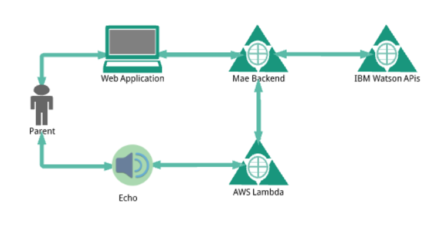

You can access the code for the Mae application from the following locations:
Journals containing text are sent to IBM Watson Personality Insights API to analyze personality and current needs, which feeds the Mäe advice engine. With each new text journal, Mae calculates the user's mood for the past two weeks worth of journals and compares that mood to the baseline for the first two weeks of use for that user. When a mother shows is outside one standard deviation from their normal levels of any of the six critical personality traits that make up Emotional Range (anger, depression, immoderation, vulnerability, anxiety, and self-consciousness), the user is notified that they are showing signs of that train. When the user is outside two standard deviations of any of the traits, the user is advised to seek the assistance of a trusted care-giver to assess their current state.
IBM Watson Personality Insights provides an assessment of the user's current greatest needs when analyzing the user's journals. From these needs, Mae calculates the current greatest need for the user and provides randomized advice based on this need. For example, if the user's current greatest need is "love" advice might be returned to reach out for a cuddle with a loved one. If the user's current greatest need is "liberty" advice might be returned to take some time for themselves or to look for ways to deviate from the normal routine. In this way Mae provides up-to-date, personalized advice for each user. Mae also features the ability to request random advice without analyzing or reviewing journals or having knowledge of the user. This feature provides added support to new mothers who can use all the support they can get.
A convenient health care report provides health care providers with details for assessing the change in the mother's mood over time, without revealing the specifics of the mother's journal entries unnecessarily.

The Mae Echo activity calls to the Mae AWS Lambda to provide its functionality. The AWS Lambda interfaces with Alexa and the Mae backend. It takes text input from journal type activities and sends to Mae backend to be recorded and receive advice for client. Advice is returned to client. For metric type recordings, metrics are sent to Mae backend and a generic response is returned based on metric type.
The Mae backend is a set of REST APIs implemented in Java, running on the Heroku PAAS. These APIs are available for the Web application and the Alexa application to call as needed.
Mae uses the Personality Insights API from IBM Watson. The reference for this API is available here: For more information on how Mae uses the Personality Insights API, see "How Mae Provides User-Specific Advice" section above.